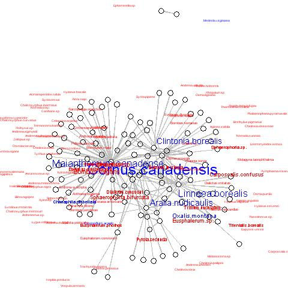
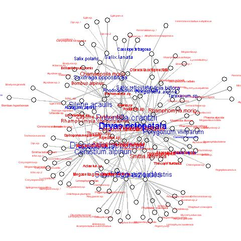

| Network plot | Description |
|  |
barrett1987: Network showing which insects pollinate which plants in Canada.
Plants blue, visitors red. Plotting code |
|  |
elberling1999: Network showing which insects pollinate which plants in northern Sweden.
Plants blue, visitors red. Plotting code |